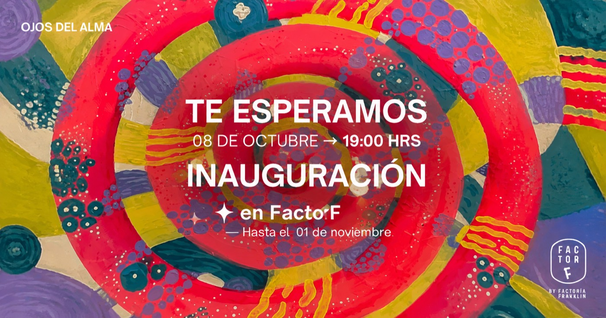
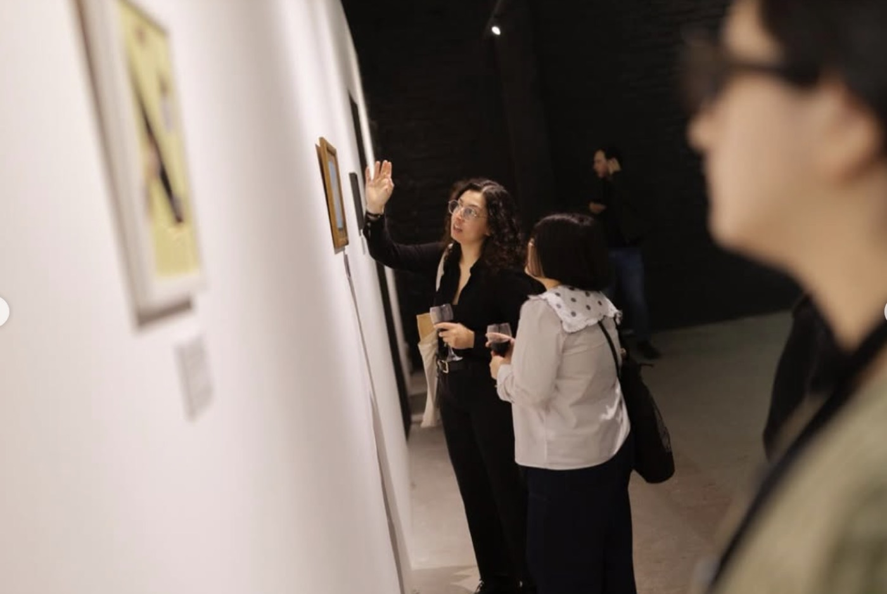

Perderse para Encontrar
Cinco años de trabajo territorial en Barrio Franklin, una iniciativa de Puebla.
8 artistas, 86 obras sobre la pregunta: ¿qué ocurre entre el diagnóstico y la sanación?

Ojos del Alma nace de una pregunta clínica de la Dra. Paola Andrea Dorta Salfate: ¿qué ocurre entre el diagnóstico y la sanación?
La medicina enseña a mirar el ojo físico. Este proyecto propone mirar los otros dos: el que siente y el que comprende. Las obras no se seleccionaron por trayectoria ni técnica: se seleccionaron por su mensaje.

Factor F abre sus 400 m² de sala en el 4° piso de la Factoría. No siempre convoca sus propias muestras: muchas veces presta el espacio para que otras curatorías tengan dónde suceder.
Cinco años de trabajo territorial en Barrio Franklin, una iniciativa de Puebla.
Muestra colectiva de 30 artistas seleccionados, con visita guiada.
Arte textil contemporáneo con más de 30 artistas chilenos.
Cerámica · objeto · forma · gesto.
Déjanos tus datos y te avisamos cuando abra la próxima convocatoria de Factor F.
Sigue a @factor__f en InstagramTe escribiremos cuando abra la próxima convocatoria de Factor F.